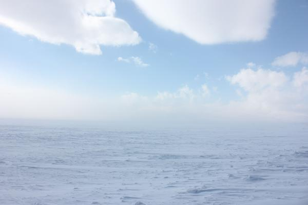
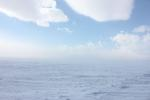
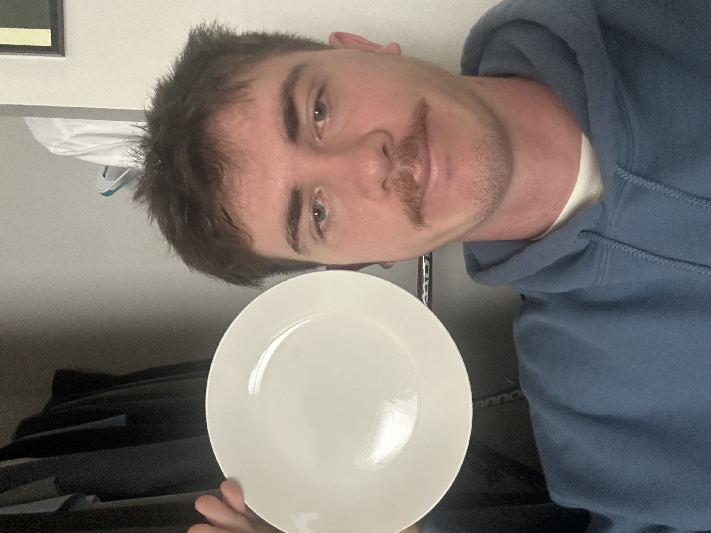
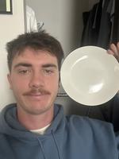

Original Image
Click the links below to open the original photograph and its converted formats in a new tab.
Original JPG | Original as GIF | Grayscale | Black and White
This page demonstrates how different image formats, sizes, and proportions affect the appearance and quality of photographs on a website. I will compare original images with resized, converted, and distorted versions to better understand how images should be displayed on the web.
I selected a photograph of a blue sky with white clouds stretching over a snowy landscape. The photograph was taken by Şevval Kaynak and downloaded from Pexels. I chose this picture because its colors and details make it useful for comparing image quality and formats. The original file is a JPG image measuring 5184 × 3456 pixels with a file size of approximately 0.787 MB.
Click the links below to open the original photograph and its converted formats in a new tab.
Original JPG | Original as GIF | Grayscale | Black and White
This image uses inline CSS to reduce its displayed size without changing the original file dimensions. Only the width is specified, allowing the browser to automatically calculate the correct height. The original proportions remain the same, but the original file still takes up the same storage space.
This photograph was reduced to 600 × 400 pixels using Python's Pillow image processing library. Unlike CSS resizing, this changes the image's actual pixel dimensions and reduces its storage requirements while maintaining the original 3:2 aspect ratio.

These examples demonstrate what happens when an image's width or height is changed without maintaining its original aspect ratio. Each example keeps one dimension of the properly reduced photograph while decreasing the other dimension by approximately 33%. Separately resized image files were also saved for each of these dimensions.
Both images are displayed at the same size. However, the second image has only 25% of the first image's width and height in its actual file. Enlarging it with CSS makes the loss of image quality more noticeable because the browser must enlarge the existing pixels.

I took a photograph of myself holding a round white dinner plate next to my face. I chose this photograph because the circular plate and recognizable facial proportions make it easy to identify when an image becomes stretched or compressed. The original photograph is a JPEG image measuring 2316 × 3088 pixels with a file size of approximately 1.413 MB.
Click the links below to open the original photograph and its converted formats in a new tab.
Original JPEG | Original as GIF | Grayscale | Black and White

This image uses inline CSS to reduce its displayed size without changing its original file dimensions. The browser automatically adjusts the height based on the specified width. The dinner plate remains circular because the original aspect ratio is maintained.
This photograph was reduced to 600 × 800 pixels using Python's Pillow image processing library. The original 3:4 aspect ratio was maintained so that the dinner plate and my face remain proportional. Unlike CSS resizing, this process reduces the actual number of pixels in the file.
These examples demonstrate how changing an image's width or height without maintaining its aspect ratio can distort recognizable objects. The dinner plate becomes oval-shaped, and my facial proportions become noticeably different. Separately resized image files were also saved for each of these dimensions.
Both photographs below are displayed at 600 × 800 pixels. However, the second photograph was saved at only 150 × 200 pixels, which is 25% of the original reduced image's width and height. Enlarging the smaller photograph using CSS makes it appear blurrier and less detailed.
